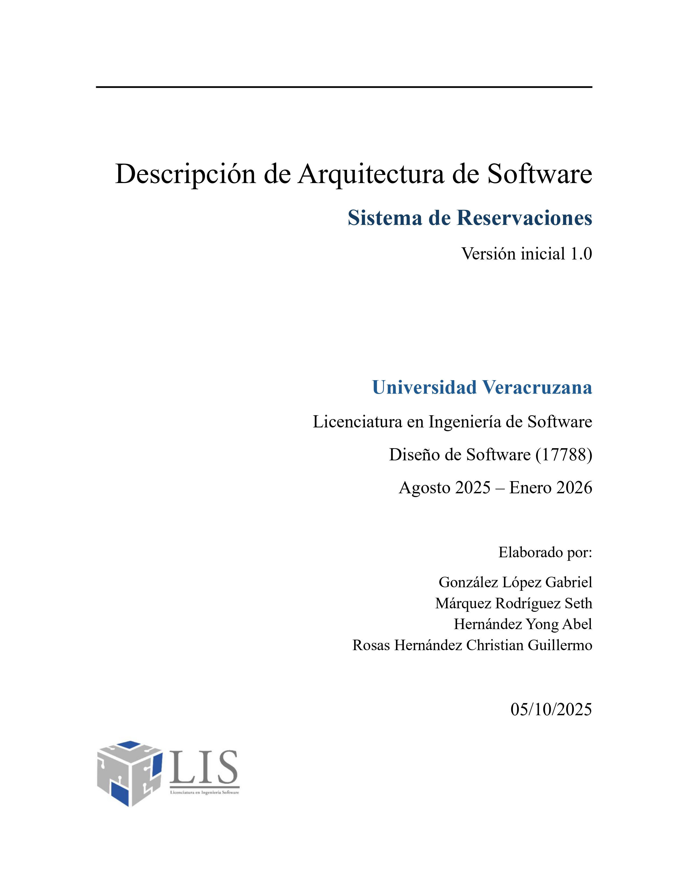
1. Control de Versiones
Versión |
Fecha |
Autor |
Cambios significativos |
0.0.1 |
30/09/2025 |
Gabriel Antonio González López |
Marcos generales para la entrega |
0.0.2 |
30/09/2025 |
Gabriel Antonio González López |
Redacción sobre visión y alcance |
0.0.3 |
03/10/2025 |
Gabriel Antonio González López |
Redacción de Descripciones de caso de uso (CU01-CU12) |
0.0.4 |
04/10/2025 |
Abel Hernández Yong |
Refinamiento de visión y alcance. Agregado planteamiento del problema, alcance y proposito del diseño |
0.0.5 |
04/10/2025 |
Christian Guillermo Rosas Hernández |
Redacción de Descripciones de caso de uso (CU25-CU36) |
0.0.6 |
05/10/2025 |
Abel Hernández Yong |
Corrección de escenarios de atributos de calidad. Armado del utility tree |
0.0.7 |
06/10/2025 |
Abel Hernández Yong |
Corrección de numeración, formato y etiquetado en casos de uso. |
0.0.8 |
05/10/2025 |
Gabriel Antonio González López |
Diagrama de contexto, organización de documentos |
0.0.9 |
05/10/2025 |
Christian Guillermo Rosas Hernández |
Creacion y Correcion de Diagramas de CUs por Autor |
0.0.10 |
05/10/2001 |
Seth Marquez Rodriguez |
Diagramas de flujo de datos, Correcion de numeracion, Elaboracion CU 13-30, 40-45, Contribucion en el utily tree |
2. Introducción
2.1. Contexto y Alcance del Sistema
2.1.1. Visión del Sistema
Para los clientes, huéspedes, administración y equipos de operación de la cadena hotelera, quienes necesitan un sistema centralizado para gestión de inventario, reservaciones, estancias y servicios, que proporcione una experiencia fluida al cliente y sea fácil de utilizar por el personal, el Sistema de Reservaciones tiene como objetivo transformar el proceso de reservación y gestión de estancias de la cadena mediante una plataforma de reservación en linea con pago por adelantado, que ofrezca un servicio rápido, intuitivo, satisfactorio y seguro. Asi como un sistema de gestión de hoteles y estancias, que ofrezca un control de inventario de hoteles y habitaciones, registro de check-in y check-out, cambio de habitacion, cargo de servicios a la habitación y consumo del huésped, y configuración de politicas como tarifas de cancelación o cambio de reserva, por último, ofrecerá metricas de rendimiento y registro de reservas para asegurar la trazabilidad de cada transacción por parte de la auditoria.
A diferencia de los sistemas de reservacion actuales utilizados por la cadena, propensos a errores, incompatibles y con una curva de aprendizaje pronunciada, nuestra solución ofrece una administración unificada para el inventario y las operaciones de la cadena, garantizando la consistencia de los datos, reduciendo los errores en el proceso de reservación y seguimiento de estancias, y facilitando la implementación de politicas de negocio, lo que se traduce en una mejora de la eficiencia operativa, maximización de los ingresos por ocupación, mejor adaptabilidad al estado del mercado y una mayor satisfacción del huésped.
2.1.2. Alcance
-
Reservaciones: Reservación en linea con pago por adelantado.
-
Gestión de estancias: Check-in, Check-out, cambio de habitación, cargo de servicio a la habitación y consumo del huésped
-
Control de inventario: Hoteles y habitaciones, servicios y consumos.
-
Configuración de políticas del negocio: Cancelación y cambio de reserva.
-
Auditoria: Consulta de información contable del area de reservaciones del hotel.
2.1.3. Audiencia del documento
Este documento está dirigido para los desarrolladores del sistema de gestión de hoteles o cualquier persona interesada en el funcionamiento del sistema.
2.1.4. Glosario
Huésped: Son los que contratan el servicio de una casa, departamento u hostal. Su experiencia engloba las interacciones entre el establecimiento y los clientes, esa experiencia comienza con el momento en el que comienzan a reservar su habitación.
Recepcionista: Dan la bienvenida a los huéspedes a su llegada al hotel, se encarga del registro de entradas y salidas, la entrega de llaves, la realización de reservas ya sea telefónica o por correo electrónico, la preparación de recibos y el cobro de facturas; también deben solucionar las quejas y problemas que los clientes tengan.
Administrador: Necesita tener conocimientos técnicos y habilidades blandas bien desarrolladas para sí poder tener una interacción efectiva con los huéspedes así como manejar un hotel para llevarlo al éxito. El administrador se encarga de asegurar el funcionamiento sin interrupciones de todos los servicios del hotel, resuelve situaciones conflictivas, conoce las normas de los servicios hoteleros y del mantenimiento que requiere el hotel. Es el rostro del hotel.
Auditor: Supervisa las actividades financieras (revisión de los estados de resultados, informes de gastos y registros de transacciones para que se cumpla con los protocolos financieros), controles internos, gestión del cumplimiento se mantienen informados sobre los cambios legislativos así como de las directrices y mejores prácticas para garantizar el cumpllimeinto de los requisitos legales y regulatorios. Análisis financiero, identifica tendencias, anomalías e indicadores de rendimiento, los auditores orientan a la gerencia, son fundamentales para la toma de decisiones y evaluación de riesgos.
Auditor nocturno: Se encarga de la gestión financiera, tareas administrativas como responder consultas de los huéspedes, procesar reservas y preparar la documentación para las operaciones del día siguiente. Lleva a cabo procedimientos de fin de jornada como finalizar transacciones e informes financieros del día.
Habitación: Es el cuarto dentro de un establecimiento hotelero destinado a ser alquilado como alojamiento privado para huéspedes, tiene servicios como cama, baño y comodidades privadas para poder descansar y pasar la noche.
Reservacion: Solicitud de alojamiento en un hotel de la cadena, implica la asignación de una o varias habitaciones durante un tiempo determinado por un precio anunciado, pagado con antelación.
Sistema de pago: Es un conjunto de instrumentos, procedimientos, infraestructuras tecnológicas y normativas que permiten la transferencia segura y eficiente de dinero entre compradores y vendedores para la realización de transacciones comerciales.
3. Definición de requerimientos
3.1. Planteamiento del problema
3.1.1. Situación actual
Actualmente cada hotel de la cadena utiliza su propia solución local para realizar el control de las reservaciones y estancias de la sucursal. Esta falta de estandarización es causa de inconsistencias y errores que impeden que la cadena se administre eficientemente.
3.1.2. Problemas del Negocio
-
Los clientes tienen que aprender a utilizar distintos sistemas de reservación por cada hotel de la cadena, lo que impulsa a los clientes a buscar soluciones de la competencia que les son más familiares.
-
Los empleados necesitan familiarizarse con el sistema de administración de cada local en particular, lo que eleva los costes de capacitación e implica volver a capacitar al empleado en caso de transferirlos a otra sucursal.
-
Cada sucursal lleva su control de inventario de formas distintas, lo que supone una gran perdida de tiempo en convertir los reportes en un formato estándar para la cadena, además este proceso es propenso a errores humanos, que comprometen la calidad de los datos.
-
Cada sucursal lleva su control de reservaciones de forma distinta, lo que supone una gran perdida de tiempo en convertir los reportes en un formato estándar para la cadena, además de ser propensos a errores, los datos suelen llegar demasiado tarde para que la administración de la cadena pueda aprovecharlos para ajustarse a la demanda.
-
La falta de formatos y procesos estandarizados dificulta el trabajo de los auditores cuando acuden a la cadena, relantizando la inspección.
3.1.3. Oportunidad de Negocio
-
Transformar el proceso de reservación hotelera, mediante un portal web y una aplicación web que permita a los huéspedes hacer reservaciones de forma rápida, eficaz, satisfactoria y segura.
-
Evitar por completo dobles reservas y dobles cobros.
-
-
Estandarizar la gestión de estancias, permitiendo capacitar a los empleados más rápidamente, reducir la tasa de errores y facilitar la rotación y transferencia de personal.
-
90% de los recepcionistas novatos completan el check-in y el check-out por su cuenta al primer intento, después de solo 10 minutos de instrucción.
-
-
Centralizar la gestión de la cadena hotelera, facilitando el control de inventario, el cobro por servicios y consumos, la implementación de precios dinámicos, políticas de reservación y políticas de cancelación.
-
Optimizar las operaciones diarias en más de 5,000 hoteles para más de 1,000,000 de habitaciones.
-
Implementar y gestionar una politica de overbooking de 10% por tipo de habitación sin sobreventa accidental.
-
3.2. Interesados
Huésped
Cliente de la cadena, su interés es encontrar alojamiento de forma fácil, conveniente y satisfactoria, pagar con seguridad y poder hacer modificaciones a su reservación o estancia, tales como extenderla o cancelarla.
Personal de Recepción
Son los encargados de recibir y atender las necesidades de los huéspedes en cuanto llegan al hotel. El sistema deberá apoyarlos a realizar las tareas de gestión de estancia y servicio al cliente con eficiencia y eficacia.
Administración de la Cadena
Administradores del negocio, su interés es llevar un control del inventario a alto nivel, así como controlar los precios, tarifas y las políticas de la cadena.
Administración del hotel Administradores de la sucursal, se encargan de llevar el control del inventario del hotel (habitaciones, servicios a la habitación y consumos), y de administrar al Personal de Recepción.
Auditor Se encargan de supervisar las actividades financieras de la cadena, verifica que los registros financieros y contables del hotel sean precisos, y que siguen todos los protocolos financieros, controles y normativas establecidas. Requiere acceso a los registros de reservación del hotel para verificar la trazabilidad de las operaciones.
3.3. Intereses (Concerns)
Huésped y Administración de la Cadena
-
Coherencia de precios mostrados: Los precios de las habitaciones cambiarán de forma dinámica, es posible que el precio de una habitación cambien mientras el huésped realiza una reservación, el sistema deberá asegurarse de que el precio mostrado al cliente al iniciar su reservación es el mismo precio que se le cobrará en la pasarela de pagos. Para evitar clientes insatisfechos y posibles reclamaciones a protección al consumidor, es crítico para la Administración de la Cadena que se respete el precio mostrado al cliente en todas las transacciones.
-
Confirmación de pagos: Los pagos deben procesarse una sola vez, independientemente de si ocurre un error y se recibe más de una solicitud, es crucial que no se realicen cobros dobles, pues comprometen la satisfacción del cliente, la imagen de la cadena, exponen a la empresa a quejas con protección al consumidor, y consumen recursos de la empresa al tener que dedicar tiempo a verificar y realizar devoluciones.
-
Privacidad y protección de la información: El sistema debe cumplir con las regulaciones de privacidad de datos personales y datos de pago de los clientes en todo momento. De no hacerlo la cadena hotelera tendrá que pagar costosas multas y demandas, se perderá la confianza de los clientes y la reputación del negocio se verá dañada. Todo lo cual se traduce en pérdidas economicas y competitivas para la cadena.
-
Manejo de picos de demanda: El sistema deberá diseñarse para tolerar aumentos, tanto esperados como inesperados de la demanda, evitando caídas totales del servicio y pasando a modo degrado de forma predecible. Es crucial que la experiencia del cliente se vea lo menos afectada que sea posible, para evitar que el cliente se frustre y recurra a una alternativa de la competencia, o pierda acceso a información sobre sus reservaciones. Desde la perspectiva de la Administración de la cadena, es importane que los sistemas de monitoreo de rendimiento, eventos y administración de seguridad se mantengan disponibles.
Huésped y Administración del Hotel
-
Facilidad de Operación: El sistema deberá ofrecer una experiencia de usuario intuitiva y una interfaz facíl de usar, un flujo de reservación claro, con cinco o menos pasos es fundamental para la captación de nuevos clientes y asegurar que la mayor cantidad de huéspedes puedan realizar una reservación facilmente desde su primera interacción con el sistema. Por su parte, la recepción requiere que el sistema los apoye a realizar sus tareas con la mayor eficacia y eficiencia posible, se espera que incluso personal novato pueda operar el sistema exitosamente con un mínimmo de tiempo invertido en capacitación.
-
Optimización del Sistema: Para hacer el sistema a la mayor cantidad de usuarios posibles, y reducir la inversión en hardware por parte de la cadena tanto como sea posible, el sistema deberá poder accederse desde equipos de computo con recursos limitados.
-
Gestión de inventario bajo concurrencia: El sistema deberá evitar por completo que ocurran dobles reservas, particularmente durante las temporadas de alta demanda cuando múltiples clientes intenten reservar una misma habitación al mismo tiempo, es crítico que esto se prevenga en su totalidad, pues un huésped jamás debería llegar al hotel y no tener ninguna habitación disponible para alojarse. Del mismo modo, la administación del hotel tampoco tendría que verse en la situación de tener que recibir más huéspedes de los que es posible para el hotel.
Auditor
-
Integridad y trazabilidad de reservaciones: Para fines de la auditoria, es necesario que todas las operaciones de reservación lleven un registro detallado y preciso, que cada transacción realizada por medio del sistema pueda ser rastreada y verificada. Esta deber ser fácil de consultar y presentarse de forma clara para agilizaar el proceso de inspección tanto como sea posible.
3.4. Diagramas de caso de uso
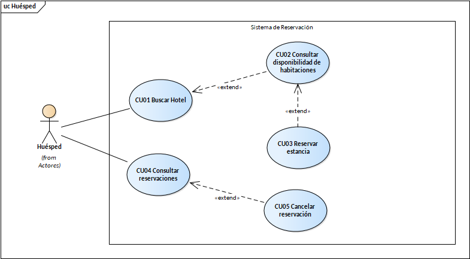
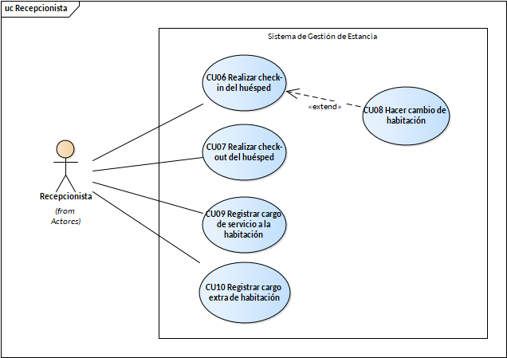
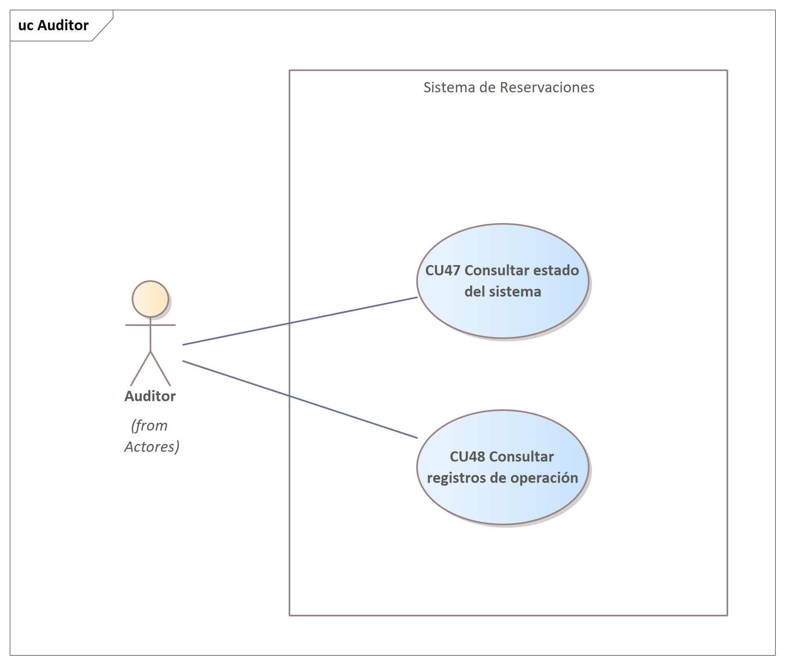
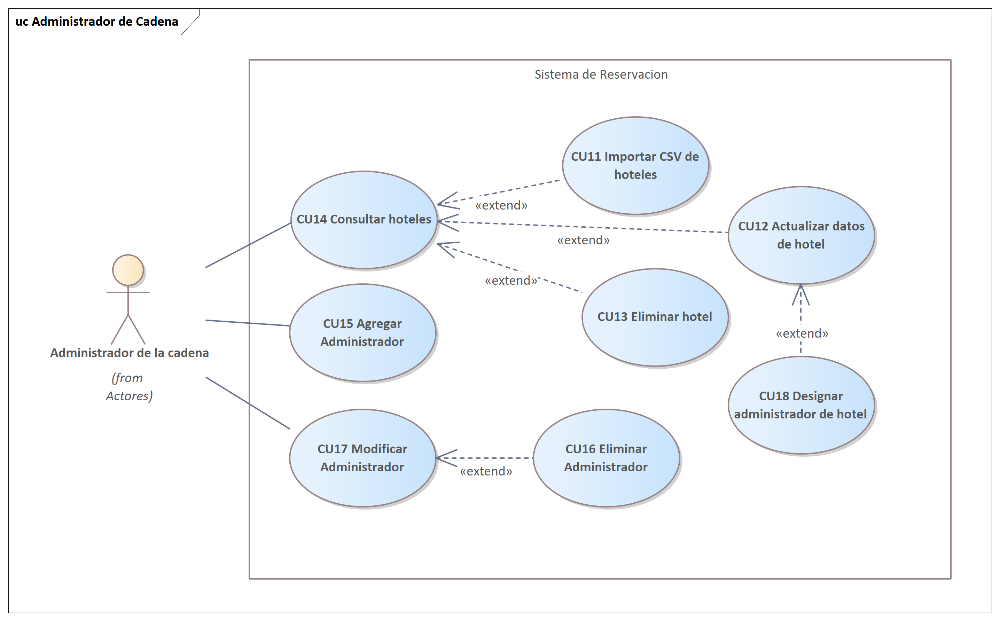
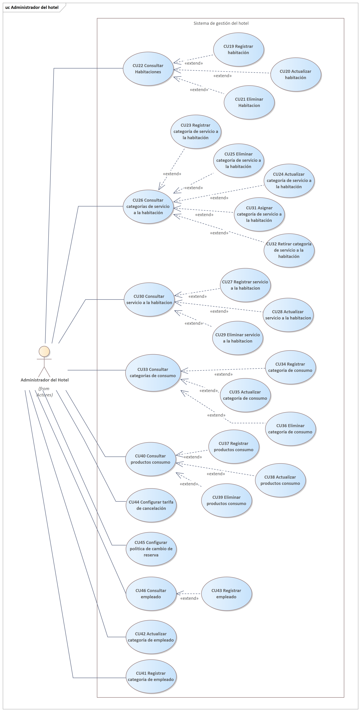
3.5. Descripciones de caso de uso
CU01 - Buscar hotel
ID: CU01
Nombre: Buscar hotel
Descripción: El Huésped busca un hotel para solicitar una estancia
Actor(es): Huésped
Disparador: Huésped selecciona "Buscar hotel”
Precondiciones: N/A
Flujo Normal
1. El Huésped selecciona una ciudad
2. El Sistema muestra los hoteles disponibles en esa ciudad (ver FA01) (ver EX01)
3. El Huésped puede consultar la disponibilidad de habitaciones (Extiende CU02)
4. Termina el caso de uso
Flujos alternos
FA01 - Buscar otro hotel
1. El Huésped busca en otra ciudad
2. Regresa al flujo normal 2
Excepciones
EX01 – Error al conectarse a la base de datos
1. El Sistema informa al Huésped que hubo un error al conectarse a la base de datos
2. Termina el caso de uso
Postcondiciones: El Huésped recibió los datos de un hotel
Reglas de negocio: N/A
Incluye: N/A
Extiende: CU02
CU02 - Consultar disponibilidad de habitaciones
ID: CU02
Nombre: Consultar disponibilidad de habitaciones
Descripción: El Huésped consulta la disponibilidad de las habitaciones con ciertas características (fecha de check-in, check-out y cantidad de huéspedes)
Actor(es): Huésped
Disparador: Húesped selecciona "Consultar disponibilidad"
Precondiciones: Haber consultado un hotel antes
Flujo Normal
1. El Huésped selecciona una fecha de check-in, check-out y cantidad de huéspedes y selecciona "Buscar"
2. El Sistema muestra los cuartos del hotel disponibles con esas características
3. El Huésped puede reservar una estancia (extiende CU03)
4. Termina el caso de uso
Flujos alternos
FA01 - Cambiar características
1. El Huésped selecciona una fecha de check-in, check-out o cantidad de huéspedes diferentes y selecciona "Buscar"
2. Regresa al flujo normal 2
Excepciones
EX01 – Error al conectarse a la base de datos
1. El Sistema informa al Huésped que hubo un error al conectarse a la base de datos
2. Termina el caso de uso
Postcondiciones: El Huésped pudo ver la disponibilidad de las habitaciones con las características seleccionadas
Reglas de negocio:
Incluye:
Extiende: CU03
CU03 - Reservar estancia
ID: CU03
Nombre: Reservar una habitación
Descripción: El Huésped reserva una habitación para hospedarse
Actor(es): Huésped
Disparador: Huésped selecciona “Reservar”
Precondiciones: Haber buscado un hotel o consultado la disponibilidad de una habitación
Flujo Normal
1. El Sistema muestra los datos de la habitación solicitada (Ver EX01)
2. El Huésped selecciona "Reservar la habitación" (ver FA01)
3. El Sistema solicita los datos de pago al Huésped
4. El Huésped ingresa sus datos de pago y selecciona “Pagar”
5. El Sistema envía los datos al Sistema de cobros (Ver EX02)
6. El Sistema envía al Huésped su comprobante de pago y de reservación
7. Termina el caso de uso
Flujos alternos
FA01 - Cancelar
1. El Huésped selecciona "Cancelar"
2. Termina el caso de uso
Excepciones
EX01 – Error al conectarse a la base de datos
1. El Sistema informa al Huésped que hubo un error al conectarse a la base de datos
2. Termina el caso de uso
EX02 – Error al procesar el pago
1. El Sistema informa al Huésped que hubo un error al realizar el cobro
2. Termina el caso de uso
Postcondiciones:
-
POST01: El Huésped reservó una habitación y recibió su comprobante
-
POST02: Se actualiza el estado de la habitación
Reglas de negocio: N/A
Incluye: N/A
Extiende: N/A
CU04 - Consultar reservaciones
ID: CU04
Nombre: Consultar reservaciones
Actores: Huésped
Descripción: El Huésped consulta las reservaciones pendientes que tiene
Precondiciones: El Huésped debe tener reservaciones activas
Flujo normal
1. El Huésped selecciona "Reservaciones"
2. El Sistema muestra las reservaciones del Huésped activas (ver EX01)
3. El Huésped puede cancelar una reservación (extiende CU05)
4. Termina el caso de uso
Flujos alternos
Excepciones
EX01 – Error al conectarse a la base de datos
1. El Sistema informa al Huésped que hubo un error al conectarse a la base de datos
2. Termina el caso de uso
Postcondiciones: El Huésped consultó sus reservaciones activas
Reglas de negocio N/A
Incluye: N/A
Extiende: CU05
CU05 – Cancelar reservación
ID: CU05
Nombre: Cancelar reservación
Descripción: El Huésped cancela una reservación
Actores: Huésped
Disparador: Huésped selecciona “Cancelar reservación”
Precondiciones: El Huésped debe tener al menos una reserva activa
Flujo Normal
1. El Huésped selecciona un método de pago (ver FA01)
2. El Sistema envía los datos de pago al Sistema de pagos
3. El Sistema confirma la transacción (ver EX01)
4. El Sistema envía el recibo de pago al Huésped y actualiza el estado de la habitación (ver EX01)
5. Termina el caso de uso
Flujos alternos
FA01 - ingresar método de pago
1. El Huésped selecciona "Nuevo método de pago"
2. El Sistema registra el método de pago
3. Regresa a flujo normal 2
Excepciones
EX01 – Error al procesar el pago
1. El Sistema informa al Huésped que hubo un error al realizar el cobro
2. Termina el caso de uso
Postcondiciones:
-
POST01: El Huésped canceló una reserva
-
POST02: Se actualizó el estado de la habitación
Reglas de negocio: N/A
Incluye: N/A
Extiende: N/A
CU06 - Realizar check-in
ID: CU06
Nombre: Realizar check-in
Actores: Recepcionista
Descripción: El Recepcionista registra la entrega de la habitación al Huésped
Precondiciones: La habitación que se va a entregar debe estar disponible
Flujo normal
1. El Recepcionista ingresa los datos de reservación del Huésped
2. El Sistema muestra los detalles de la reservación
3. El Huésped puede querer cambiar de habitación (ver CU08)
4. El Recepcionista ingresa los datos de pago del Huésped
5. El Sistema corrobora que los datos de pago sean válidos (ver EX02)
6. El Sistema actualiza el estado de la habitación
7. Termina el caso de uso
Flujos alternos
Excepciones
EX01 – Error al conectarse a la base de datos
1. El Sistema informa al Recepcionista que hubo un error al conectarse a la base de datos
2. Termina el caso de uso
EX02 – Error al procesar el pago
1. El Sistema informa al Recepcionista que hubo un error al realizar el cobro
2. Termina el caso de uso
Postcondiciones:
-
POST01: El check-in es realizado con éxito
-
POST02: Se actualiza el estado de la habitación
Reglas de negocio: N/A
Incluye: N/A
Extiende: CU08
CU07 - Realizar check-out
ID: CU07
Nombre: Realizar check-out
Actores: Recepcionista
Descripción: El Recepcionista registra la liberación de la habitación del Huésped
Precondiciones: La habitación que se va a entregar debe haber estado ocupada
Flujo normal
1. El Recepcionista ingresa los datos de estancia del Huésped
2. El Sistema muestra los detalles de la estancia (ver EX01)
4. El Recepcionista selecciona el método de pago del Huésped
5. El Sistema envía el método de pago al sistema de pagos (ver EX02)
6. El Ssitema recibe el comprobante de pago del sistema de pagos
7. El Sistema actualiza el estado de la habitación
8. Termina el caso de uso
Flujos alternos
Excepciones
EX01 – Error al conectarse a la base de datos
1. El Sistema informa al Recepcionista que hubo un error al conectarse a la base de datos
2. Termina el caso de uso
EX02 – Error al procesar el pago
1. El Sistema informa al Recepcionista que hubo un error al realizar el cobro
2. Termina el caso de uso
Postcondiciones:
-
POST01: El check-out es realizado con éxito
-
POST02: Se actualiza el estado de la habitación
Reglas de negocio: N/A
Incluye: N/A
Extiende: N/A
CU08 - Cambiar habitación
ID: CU08
Nombre: Cambiar habitación
Actores: Recepcionista
Descripción: El Recepcionista cambia la habitación de la estancia del Huésped
Precondiciones: Debe haber habitaciones disponibles
Flujo normal
1. El Sistema muestra las habitaciones disponibles junto con su precio (ver EX01)
2. El Recepcionista selecciona la que el Huésped desee (ver FA01)
3. El Sistema actualiza el estado de la habitación
4. Termina el caso de uso
Flujos alternos
FA01 - Cancelar cambio de habitación
1. El Recepcionista selecciona "Cancelar"
2. El Sistema cancela la operación
3. Termina el caso de uso
Excepciones
EX01 – Error al conectarse a la base de datos
1. El Sistema informa al Recepcionista que hubo un error al conectarse a la base de datos
2. Termina el caso de uso
Postcondiciones: Se cambió la habtiación del Huésped Reglas de negocio N/A Incluye: N/A Extiende: N/A
CU09 - Registrar cargo de servicios a la habitación
ID: CU09
Nombre: Registrar cargo de servicios a la habitación
Actores: Recepcionista
Descripción: El Recepcionista agrega el cargo por un servidio a la estancia del Huésped
Precondiciones: N/A
Flujo normal
1. El Sistema muestra las estancias del Huésped (ver EX01)
2. El Recepcionista selecciona la estancia a la que se le hará el cargo
3. El Sistema muestra los servicios que se pueden cargar (ver EX01)
4. El Recepcionista selecciona los servicio que se cargarán
5. El Sistema agrega al cargo de la habitación el servicio
6. Termina el caso de uso
Flujos alternos
Excepciones
EX01 – Error al conectarse a la base de datos
1. El Sistema informa al Recepcionista que hubo un error al conectarse a la base de datos
2. Termina el caso de uso
Postcondiciones: El Recepcionista agregó los cargos de los servicios solicitados
Reglas de negocio: N/A
Incluye: N/A
Extiende: N/A
CU10 - Registrar cargo extra a habitación
ID: CU10
Nombre: Registrar cargo extra a habitación
Actores: Recepcionista
Descripción: El Recepcionista agrega el cargo extra a una habitación
Precondiciones: N/A
Flujo normal
1. El Sistema muestra las habitaciones (ver EX01)
2. El Recepcionista selecciona la habitación a la que se le agregará el cargo
3. El Sistema muestra los cargos extra que se pueden agregar (ver EX01)
4. El Recepcionista selecciona los cargos extra que se agregarán
5. El Sistema actualiza el precio de la habitación (ver EX01)
6. Termina el caso de uso
Flujos alternos
Excepciones
EX01 – Error al conectarse a la base de datos
1. El Sistema informa al Recepcionista que hubo un error al conectarse a la base de datos
2. Termina el caso de uso
Postcondiciones: El Recepcionista agregó los cargos extra a una habitación Reglas de negocio: N/A Incluye: N/A Extiende: N/A
CU11 - Importar CSV de hoteles
ID: CU11
Nombre: Importar CSV de hoteles
Actores: Administrador de la cadena (Admin)
Descripción: El Admin importa un CSV con los datos de los hoteles de la cadena
Precondiciones: El CSV debe tener el formato brindado
Flujo normal
1. El Admin selecciona "Subir CSV" y selecciona el CSV de sus archivos (ver EX01)
2. El Sistema carga la base de datos mediante ese CSV (ver EX02)
3. Termina el caso de uso
Flujos alternos
Excepciones
EX01 - Error al subir CSV
1. El Sistema informa al Admin que hubo un error al subir el CSV
2. Termina el caso de uso
EX02 – Error al conectarse a la base de datos
1. El Sistema informa al Recepcionista que hubo un error al conectarse a la base de datos
2. Termina el caso de uso
Postcondiciones: El Sistema cargó su base de datos mediante el CSV importado Reglas de negocio: N/A Incluye: N/A Extiende: N/A
CU12 - Actualizar datos de hotel
ID: CU012
Nombre: Actualizar datos de hotel
Actores: Administrador de la cadena (Admin)
Descripción: El Admin modifica los datos de un hotel.
Precondiciones: Debe haber al menos un hotel registrado.
Flujo normal
1. El Admin selecciona el hotel que desea actualizar.
2. El Sistema muestra lo datos del hotel seleccionado para actualizarlos (ver EX01).
3. El Admin actualiza los datos del hotel (ver FA01).
4. El Admin selecciona "Guardar".
5. El Sistema actualiza los datos del hotel (ver EX01).
6. Termina el caso de uso.
Flujos alternos
FA01 - Designar administrador de hotel
1. El Admin selecciona "Designar Administrador".
2. Extiende CU15.
Excepciones
EX01 - Error al subir CSV
1. El Sistema informa al Admin que hubo un error al subir el CSV
2. Termina el caso de uso
Postcondiciones: Los datos del hotel seleccionado es actualizado.
Reglas de negocio: N/A
Incluye: N/A
Extiende: CU15
CU13 - Eliminar hotel
ID: CU13
Nombre: Eliminar hotel
Actores: Administrador de la cadena (Admin)
Descripción: El Admin elimina del sistema un hotel previamente registrado.
Precondiciones: Debe haber al menos un hotel registrado.
Flujo normal
1. El Admin selecciona el hotel que desea eliminar.
2. El Sistema muestra los datos del hotel seleccionado para confirmar la acción.
3. El Admin confirma la eliminación del hotel.
4. El Sistema valida la acción y elimina el registro del hotel de la base de datos (ver EX01) (ver EX02).
5. El Sistema informa al Admin que la eliminación fue exitosa.
6. Termina el caso de uso
Flujos alternos
FA01 - Cancelar eliminación
1. El Admin decide no eliminar el hotel y cancela la acción.
2. Regresa al flujo normal 1
Excepciones
EX01 – Error al conectarse a la base de datos
1. El Sistema informa al Admin que hubo un error al conectarse a la base de datos.
2. Termina el caso de uso.
EX02 – Error al eliminar el registro
1. El Sistema informa al Admin que ocurrió un error al intentar eliminar el hotel.
2. Termina el caso de uso.
Postcondiciones: El hotel seleccionado es eliminado del sistema.
Reglas de negocio: No se podrá eliminar un hotel que tenga reservas activas o pendientes.
Incluye: N/A
Extiende: N/A
CU14 - Consultar hoteles
ID: CU14
Nombre: Consultar hoteles
Actores: Administrador de la cadena (Admin)
Descripción: El Admin visualiza la lista de hoteles registrados en el sistema y puede consultar sus detalles.
Precondiciones: Debe haber al menos un hotel registrado.
Flujo normal
1. El Admin accede a la sección de consulta de hoteles.
2. El Sistema muestra la lista de todos los hoteles registrados.
3. El Admin selecciona un hotel para ver sus detalles.
4. El Sistema despliega la información completa del hotel seleccionado (ver EX01).
5. Termina el caso de uso
Flujos alternos
FA01 - No hay hoteles registrados
1. El Sistema informa al Admin que no existen hoteles registrados.
2. Termina el caso de uso
Excepciones
EX01 – Error al conectarse a la base de datos
1. El Sistema informa al Admin que hubo un error al conectarse a la base de datos.
2. Termina el caso de uso
Postcondiciones: Se visualizan los detalles del hotel seleccionado o la lista completa de hoteles.
Reglas de negocio: N/A
Incluye: N/A
Extiende: N/A
CU15 - Agregar Administrador
ID: CU30
Nombre: Agregar Administrador
Actores: Administrador de la cadena (Admin)
Descripción: El Admin registra un nuevo administrador del sistema.
Precondiciones: Debe existir al menos una categoría de servicios registrada.
Flujo normal
1. El Admin accede a la sección de gestión de administradores.
2. El Sistema muestra el formulario para agregar un nuevo administrador.
3. El Admin ingresa los datos requeridos del nuevo administrador y confirma la acción.
4. El Sistema valida la información ingresada (ver EX01)(ver EX02).
5. El Sistema registra al nuevo administrador en la base de datos.
6. El Sistema informa al Admin que el registro fue exitoso.
7. Termina el caso de uso.
Flujos alternos
FA01 - Datos incompletos o inválidos
1. El Sistema detecta que los datos ingresados son incorrectos o incompletos.
2. El Sistema muestra un mensaje de error y solicita corregirlos.
3. Regresa al flujo normal en el paso 3.
FA02 - Nombre de usuario duplicado
1. El Sistema detecta que el nombre de usuario ya existe.
2. El Sistema solicita un nombre de usuario diferente.
3. Regresa al flujo normal en el paso 3.
Excepciones
EX01 – Error al conectarse a la base de datos
1. El Sistema informa al Admin que hubo un error al conectarse a la base de datos.
2. Termina el caso de uso.
EX02 – Error al registrar el administrador
1. El Sistema informa al Admin que ocurrió un error al intentar registrar el nuevo administrador.
2. Termina el caso de uso.
Postcondiciones: El nuevo administrador queda registrado en el sistema.
Reglas de negocio: Cada administrador debe tener un nombre de usuario único.
Incluye: N/A
Extiende: N/A
CU16 - Eliminar Administrador
ID: CU16
Nombre: Eliminar Administrador
Actores: Administrador de la cadena (Admin)
Descripción: El Admin elimina del sistema un administrador previamente registrado.
Precondiciones: Debe existir al menos una categoría de servicios registrada.
Flujo normal
1. El Admin selecciona el administrador que desea eliminar.
2. El Sistema muestra los datos del administrador seleccionado para confirmar la acción.
3. El Admin confirma la eliminación.
4. El Sistema valida la acción y elimina el registro del administrador (ver EX01)(ver EX02).
5. El Sistema informa al Admin que la eliminación fue exitosa.
6. Termina el caso de uso.
Flujos alternos
FA01 - Cancelar eliminación
1. El Admin decide no eliminar el administrador y cancela la acción.
2. Regresa al flujo normal 1.
Excepciones
EX01 – Error al conectarse a la base de datos
1. El Sistema informa al Admin que hubo un error al conectarse a la base de datos.
2. Termina el caso de uso.
EX02 – Error al eliminar el registro
1. El Sistema informa al Admin que ocurrió un error al intentar eliminar el administrador.
2. Termina el caso de uso.
Postcondiciones: El administrador seleccionado es eliminado del sistema.
Reglas de negocio: No se podrá eliminar un administrador que esté asignado a tareas críticas activas.
Incluye: N/A
Extiende: N/A
CU17 - Modificar Administrador
ID: CU17
Nombre: Modificar Administrador
Actores: Administrador de la cadena (Admin)
Descripción: El Admin actualiza los datos de un administrador existente en el sistema.
Precondiciones: Debe existir al menos una categoría de servicios registrada.
Flujo normal
1. El Admin accede a la sección de gestión de administradores.
2. El Sistema muestra la lista de administradores registrados.
3. El Admin selecciona el administrador que desea modificar.
4. El Sistema muestra la información actual del administrador.
5. El Admin actualiza los datos y confirma la modificación.
6. El Sistema valida la información ingresada (ver EX01)(ver EX02).
7. El Sistema guarda los cambios realizados.
8. El Sistema informa al Admin que la modificación fue exitosa.
9. Termina el caso de uso.
Flujos alternos
FA01 - No existen administradores registrados
1. El Sistema informa al Admin que no hay administradores registrados para modificar.
2. Termina el caso de uso.
FA02 - Nombre de usuario duplicado
1. El Sistema detecta que el nuevo nombre de usuario ya existe.
2. El Sistema solicita un nombre diferente.
3. Regresa al flujo normal en el paso 5.
Excepciones
EX01 – Error al conectarse a la base de datos
1. El Sistema informa al Admin que hubo un error al conectarse a la base de datos.
2. Termina el caso de uso.
EX02 – Error al modificar el registro
1. El Sistema informa al Admin que ocurrió un error al intentar modificar el administrador.
2. Termina el caso de uso.
Postcondiciones: La información del administrador es actualizada correctamente.
Reglas de negocio: El nombre de usuario debe ser único y válido.
Incluye: N/A
Extiende: N/A
CU18 - Designar administrador de hotel
ID: CU18
Nombre: Designar administrador de hotel
Actores: Administrador de la cadena (Admin)
Descripción: El Admin asigna a un empleado como administrador de un hotel.
Precondiciones: Debe existir al menos un hotel y al menos un empleado registrado que pueda ser administrador.
Flujo normal
1. El Admin accede a la sección de gestión de empleados de un hotel.
2. El Sistema muestra la lista de empleados disponibles para asignar como administrador (ver EX01).
3. El Admin selecciona un empleado y confirma la asignación como administrador del hotel (ver FA01).
4. El Sistema valida la acción y asigna al empleado como administrador del hotel.
5. El Sistema informa al Admin que la asignación fue exitosa.
6. Termina el caso de uso
Flujos alternos
FA01 - Cancelar asignación
1. El Admin decide no asignar un administrador y cancela la acción.
2. Regresa al flujo normal 1
Excepciones
EX01 – Error al conectarse a la base de datos
1. El Sistema informa al Admin que hubo un error al conectarse a la base de datos.
2. Termina el caso de uso
Postcondiciones: El empleado seleccionado queda asignado como administrador del hotel.
Reglas de negocio: Un hotel solo puede tener un administrador activo a la vez.
Incluye: N/A
Extiende: N/A
CU19 - Registrar habitacion
ID: 19
Nombre: Registrar habitacion
Actores: Administrador de la cadena (Admin)+
Descripción: El AdminHotel registra una nueva habitacion a un hotel
Precondiciones: Debe existir por lo menos 1 hotel en el sistema, debe estarse en la ventana de configuracion de hotel.
Flujo normal
1. El AdminHotel da click en agregar habitaicon (ver FA02)+
2. El Sistema solicita los datos de habitacion
3. El AdminHotel Ingresa los datos y confirma la habitacion (Ver FA02)(ver FA01)
4. El Sistema Valida los datos y registra la habitacion en la vase de datos(ver FA03)(ver EX01).
Flujos alternos
FA01 - Datos invalidos o incompletos
1. EL Sistema notifica que indica que hay datos erroneamente ingresados
2. Regresa al flujo normal 3.
FAO2 - Cancelar crear habitacion
1. El AdminHotel cancela la accion de crear habitacion
2. Termina el CU.
FA03 - Habitacion registrada con los mismos datos
1. El Sistema muestra un mensaje que indica que el numero de habitacion que desea ingresarse ya existe.
2. Regresa al flujo normal 3
Excepciones *
*EX01 – Error al conectarse a la base de datos
1. El Sistema informa al AdminHotel que hubo un error al conectarse a la base de datos.+
2. Termina el caso de uso
Postcondiciones: La habitacion queda registrada en el hotel.
Reglas de negocio: Los identificadores de las habitaciones son unicos
Incluye: N/A
Extiende: N/A +.
CU20 - Actualizar habitación
ID: CU20
Nombre: Actualizar habitación
Actores: AdminHotel
Descripción: El AdminHotel actualiza los datos de una habitación existente en el sistema.
Precondiciones: Debe existir al menos una habitación registrada en el hotel.
Flujo normal
1. El AdminHotel accede al módulo de administración de habitaciones.
2. El Sistema muestra la lista de habitaciones del hotel (ver EX01).
3. El AdminHotel selecciona la habitación que desea modificar (ver FA01).
4. El Sistema muestra los datos actuales de la habitación seleccionada.
5. El AdminHotel edita los datos necesarios y confirma la actualización (ver FA02).
6. El Sistema valida los datos y actualiza la información en la base de datos (ver EX02).
7. El Sistema confirma que la actualización fue realizada con éxito.
8. Termina el caso de uso
Flujos alternos
FA01 - No se selecciona habitación
1. El AdminHotel no selecciona ninguna habitación.
2. El Sistema muestra un mensaje solicitando la selección de una habitación.
3. Regresa al flujo normal 2
FA02 - Cancelar actualización
1. El AdminHotel cancela la acción de actualización.
2. Termina el caso de uso
Excepciones
EX01 – Error al conectarse a la base de datos
1. El Sistema informa al AdminHotel que hubo un error al conectarse a la base de datos.
2. Termina el caso de uso
EX02 – Error al guardar los cambios
1. El Sistema informa al AdminHotel que no se pudieron guardar los cambios realizados.
2. Termina el caso de uso
Postcondiciones: La información de la habitación se actualiza correctamente en la base de datos.
Reglas de negocio: Los identificadores de las habitaciones no pueden modificarse.
Incluye: N/A
Extiende: N/A
CU21 - Eliminar habitación
ID: CU21
Nombre: Eliminar habitación
Actores: AdminHotel
Descripción: El AdminHotel elimina del sistema una habitación registrada en el hotel.
Precondiciones: Debe existir al menos una habitación registrada en el hotel.
Flujo normal
1. El AdminHotel accede al módulo de administración de habitaciones.
2. El Sistema muestra la lista de habitaciones disponibles (ver EX01).
3. El AdminHotel selecciona la habitación que desea eliminar (ver FA01).
4. El Sistema muestra los datos de la habitación seleccionada y solicita confirmación.
5. El AdminHotel confirma la eliminación.
6. El Sistema elimina la habitación de la base de datos (ver EX02).
7. El Sistema muestra un mensaje indicando que la habitación fue eliminada con éxito.
8. Termina el caso de uso
Flujos alternos
FA01 - Cancelar eliminación
1. El AdminHotel cancela la acción de eliminación.
2. Termina el caso de uso
Excepciones
EX01 – Error al conectarse a la base de datos
1. El Sistema informa al AdminHotel que hubo un error al conectarse a la base de datos.
2. Termina el caso de uso
EX02 – Error al eliminar la habitación
1. El Sistema informa al AdminHotel que ocurrió un error al intentar eliminar la habitación.
2. Termina el caso de uso
Postcondiciones: La habitación seleccionada es eliminada del sistema.
Reglas de negocio: No se podrá eliminar una habitación que tenga una reserva activa o pendiente.
Incluye: N/A
Extiende: N/A
CU22 - Consultar habitaciones
ID: CU22
Nombre: Consultar habitaciones
Actores: AdminHotel
Descripción: El AdminHotel consulta la lista de habitaciones registradas en su hotel y puede visualizar sus detalles.
Precondiciones: Debe existir al menos una habitación registrada en el hotel.
Flujo normal
1. El AdminHotel accede a la sección de consulta de habitaciones.
2. El Sistema muestra la lista completa de habitaciones registradas (ver EX01).
3. El AdminHotel selecciona una habitación para ver su información detallada.
4. El Sistema despliega los datos de la habitación seleccionada.
5. Termina el caso de uso
Flujos alternos
FA01 - No hay habitaciones registradas
1. El Sistema informa al AdminHotel que no existen habitaciones registradas en el hotel.
2. Termina el caso de uso
Excepciones
EX01 – Error al conectarse a la base de datos
1. El Sistema informa al AdminHotel que hubo un error al conectarse a la base de datos.
2. Termina el caso de uso
Postcondiciones: Se visualizan los detalles de las habitaciones registradas.
Reglas de negocio: N/A
Incluye: N/A
Extiende: N/A
CU23 - Registrar categoria de servicio a la habitacion
ID: CU23
Nombre: Registrar categoría de servicio a la habitación
Actores: Administración del hotel (AdminHotel)
Descripción: El AdminHotel registra una nueva categoría de servicio a la habitación en el sistema.
Precondiciones: EDebe existir almenos un hotel en el sistema.
Flujo normal
1. El AdminHotel selecciona la opción para crear una nueva categoría de servicio a la habitación.
2. El Sistema solicita los datos de la nueva categoría.
3. El AdminHotel ingresa la información y confirma.
4. El Sistema valida la informacion(ver FA01)(ver FA02).
5. El Sistema guarda la nueva categoría.(ver EX01)
6. El Sistema notifica al AdminHotel que el registro fue exitoso.
7. Termina el caso de uso.
Flujos alternos
FA01 - Datos invalidos o incompletos
1. EL Sistema notifica que indica que hay datos erroneamente ingresados
2. Regresa al flujo normal 3.
FA02 - Nombre de categoría duplicado
1. El Sistema detecta que el nombre de la categoría ya existe.
2. El Sistema informa del error al AdminHotel y solicita un nombre diferente.
3. Regresa al flujo normal 3.
Excepciones
EX01 – Error al conectarse a la base de datos
1. El Sistema informa al AdminHotel que hubo un error al conectarse a la base de datos.
2. Termina el caso de uso.
Postcondiciones: Se crea una nueva categoría de servicio a la habitación en el sistema.
Reglas de negocio: El nombre de cada categoría de servicio debe ser único.
Incluye: N/A
Extiende: N/A
CU24 - Actualizar categoria de servicio a la habitacion
ID: CU24
Nombre: Actualizar categoría de servicio a la habitación
Actores: Administración del hotel (AdminHotel)
Descripción: El AdminHotel actualiza la información de una categoría de servicio a la habitación existente.
Precondiciones: Debe existir por lo menos una categoria de servicio.
Flujo normal
1. El AdminHotel selecciona la categoría de servicio a modificar.
2. El Sistema muestra los datos de categoria.
3. El AdminHotel actualiza la información y confirma los cambios.
4. El Sistema valida los nuevos datos (ver FA01)(ver FA02).
5. El Sistema guarda las modificaciones.(ver EX01)
6. El Sistema notifica al AdminHotel el éxito de la operación.
7. Termina el caso de uso.
Flujos alternos
FA01 - No existen categorías
1. El Sistema no encuentra categorías de servicio registradas.
2. El Sistema informa al AdminHotel que el catálogo está vacío.
3. Termina el caso de uso.
FA02 - Nombre de categoría duplicado
1. El Sistema detecta que el nombre de la categoría ya existe.
2. El Sistema informa del error al AdminHotel y solicita un nombre diferente.
3. Regresa al flujo normal 3.
Excepciones
EX01 – Error al conectarse a la base de datos
1. El Sistema informa al AdminHotel que hubo un error al conectarse a la base de datos.
2. Termina el caso de uso.
Postcondiciones: La información de la categoría de servicio a la habitación es actualizada.
Reglas de negocio: N/A
Incluye: N/A
Extiende: N/A
CU25 - Eliminar categoría de servicio a la habitación
ID: CU25
Nombre: Eliminar categoría de servicio a la habitación
Actores: Administración del hotel (AdminHotel)
Descripción: El AdminHotel elimina una categoría de servicio a la habitación del catálogo.
Precondiciones: Debe existir por lo menos una categoria de servicio.
Flujo normal
1. El AdminHotel selecciona la categoría de servicio que desea eliminar.
2. El_Sisetema_ pide una confirmacion para la operacion.4
4. El AdminHotel confirma la elimincacion(ver FA01)
3. El Sistema valida que la categoría no tenga un historial de uso (ver EX01).
4. El Sistema elimina la categoría del catálogo(ver EX01).
5. El Sistema confirma la eliminación al AdminHotel.
6. Termina el caso de uso.
Flujos alternos
FA01 - Cancelar operación
1. El AdminHotel cancela la operación antes de confirmar en el paso 3.
2. El Sistema descarta los cambios y termina el caso de uso.
Excepciones
EX01 - La categoría tiene un historial de uso
1. El Sistema detecta que la categoría ha sido usada en servicios asignados a habitaciones.
2. El Sistema bloquea la eliminación y notifica al AdminHotel que la acción no es posible.
3. Termina el caso de uso.
EX02 – Error al conectarse a la base de datos
1. El Sistema informa al AdminHotel que hubo un error al conectarse a la base de datos.
2. Termina el caso de uso.
Postcondiciones: La categoría de servicio es eliminada del sistema.
Reglas de negocio: No se puede eliminar una categoría de servicio que ya haya sido utilizada en registros históricos.
Incluye: N/A
Extiende: N/A
CU26 - Consultar categorías de servicio a la habitación
ID: CU26
Nombre: Consultar categorías de servicio a la habitación
Actores: Administración del hotel (AdminHotel)
Descripción: El AdminHotel consulta la lista de todas las categorías de servicio a la habitación disponibles.
Precondiciones: Debe existir por lo menos una categoria de servicio en el sistema.
Flujo normal
1. El AdminHotel inicia la función para consultar las categorías de servicio a la habitación.
2. El Sistema muestra una lista con todas las categorías registradas (ver FA01)(ver EX01).
3. Termina el caso de uso.
Flujos alternos
FA01 - No existen categorías
1. El Sistema no encuentra categorías de servicio registradas.
2. El Sistema informa al AdminHotel que el catálogo está vacío.
3. Termina el caso de uso.
Excepciones
EX01 – Error al conectarse a la base de datos
1. El Sistema informa al AdminHotel que hubo un error al conectarse a la base de datos.
2. Termina el caso de uso.
Postcondiciones: El AdminHotel visualiza la lista de categorías de servicio a la habitación.
Reglas de negocio: N/A
Incluye: N/A
Extiende: N/A
CU27 - Registrar servicio a la habitación
ID: CU27
Nombre: Registrar servicio a la habitación
Actores: Administración del hotel (AdminHotel)
Descripción: El AdminHotel registra un nuevo servicio a la habitación en el sistema.
Precondiciones: Debe existir al menos una categoría de servicio en el sistema.
Flujo normal:
1. El AdminHotel selecciona la opción para crear un nuevo servicio a la habitación.
2. El Sistema solicita los datos del servicio y la categoria a la que pertenecera(ver EX01).
3. El AdminHotel ingresa la información y confirma.
4 El Sistema valida la información y guarda el nuevo servicio (ver FA01)(ver FA02).
6. El Sistema notifica al AdminHotel que el registro fue exitoso.
7. Termina el caso de uso.
Flujos alternos:
FA01 - Datos inválidos o incompletos
1. El Sistema notifica al AdminHotel que hay datos erróneos.
2. Regresa al flujo normal 3.
- FA02 - Nombre de servicio duplicado
-
-
El Sistema detecta que el nombre del servicio ya existe.
-
Regresa al flujo normal 2.
-
Excepciones:
EX01 - Error al conectarse a la base de datos
1. El Sistema informa al AdminHotel que hubo un error al conectarse a la base de datos.
2. Termina el caso de uso.
Postcondiciones: Se crea un nuevo servicio a la habitación en el sistema.
Reglas de negocio: El nombre de cada servicio debe ser único.
Incluye / Extiende: N/A
CU28 - Actualizar servicio a la habitación
ID: CU28
Nombre: Actualizar servicio a la habitación
Actores: Administración del hotel (AdminHotel)
Descripción: El AdminHotel actualiza la información de un servicio a la habitación existente.
Precondiciones: Debe existir al menos una categoría de servicio en el sistema y almenos un servicio registrado.
Flujo normal:
1. El AdminHotel selecciona el servicio a modificar.
2. El Sistema muestra los datos del servicio(ver EX01).
3. El AdminHotel actualiza la información y confirma los cambios.
4. El Sistema valida los nuevos datos (ver FA01).
5. El Sistema guarda las modificaciones (ver EX01).
6. El Sistema notifica al AdminHotel el éxito de la operación.
7. Termina el caso de uso.
FA01 - Nombre de servicio duplicado
1. El Sistema detecta que el nombre del servicio ya existe.
2. El Sistema solicita un nombre diferente.
3. Regresa al flujo normal 3.
FA01 - Cancelar operación
1. El AdminHotel cancela la operación.
2. Regresa al flujo normal 2
Excepciones: EX01 – Error al conectarse a la base de datos:: 1. El Sistema informa al AdminHotel que hubo un error al conectarse a la base de datos. 2. Termina el caso de uso.
Postcondiciones: La información del servicio a la habitación es actualizada.
Reglas de negocio: N/A
Incluye / Extiende: N/A
CU29 - Eliminar servicio a la habitación
ID: CU29
Nombre: Eliminar servicio a la habitación
Actores: Administración del hotel (AdminHotel)
Descripción: El AdminHotel elimina un servicio a la habitación del catálogo.
Precondiciones: Debe existir al menos una categoría de servicio en el sistema y un servicio.
Flujo normal:
1. El AdminHotel selecciona el servicio que desea eliminar.
2. El Sistema pide una confirmación para la operación.
3. El AdminHotel confirma la eliminación (ver FA01).
4. El Sistema valida que el servicio no tenga historial de uso (ver EX01).
5. El Sistema elimina el servicio del catálogo (ver EX01).
6. El Sistema confirma la eliminación al AdminHotel.
7. Termina el caso de uso.
Flujos alternos:
FA01 - Cancelar operación
1. El AdminHotel cancela la operación antes de confirmar.
2. El Sistema descarta los cambios y termina el caso de uso.
Excepciones:
EX01 - El servicio tiene historial de uso
1. El Sistema detecta que el servicio ha sido utilizado en habitaciones.
2. El Sistema bloquea la eliminación y notifica al AdminHotel.
3. Termina el caso de uso.
EX02 – Error al conectarse a la base de datos
1. El Sistema informa al AdminHotel que hubo un error al conectarse a la base de datos.
2. Termina el caso de uso.
Postcondiciones: El servicio es eliminado del sistema.
Reglas de negocio: No se puede eliminar un servicio que ya haya sido utilizado en registros históricos.
Incluye / Extiende: N/A
CU30 - Consultar servicio a la habitación
ID: CU30
Nombre: Consultar servicio a la habitación
Actores: Administración del hotel (AdminHotel)
Descripción: El AdminHotel consulta la lista de todos los servicios a la habitación disponibles.
Precondiciones: Debe existir al menos una categoría de servicio en el sistema.
Flujo normal:
1. El AdminHotel inicia la función para consultar los servicios a la habitación.
2. El Sistema muestra una lista con todos los servicios registrados (ver FA01)(ver EX01).
3. Termina el caso de uso.
Flujos alternos:
FA01 - No existen servicios
1. El Sistema no encuentra servicios registrados.
2. El Sistema informa al AdminHotel que el catálogo está vacío.
3. Termina el caso de uso.
Excepciones:
EX01 – Error al conectarse a la base de datos
1. El Sistema informa al AdminHotel que hubo un error al conectarse a la base de datos.
2. Termina el caso de uso.
Postcondiciones: El AdminHotel visualiza la lista de servicios a la habitación.
Reglas de negocio: N/A
Incluye / Extiende: N/A
CU31 - Asignar categoría de servicio a la habitación
ID: CU31
Nombre: Asignar categoría de servicio a la habitación
Actores: Administración del hotel (AdminHotel)
Descripción: El AdminHotel habilita una categoría de servicio para que esté disponible en una o más categorías de habitaciones.
Precondiciones: Debe existir al menos una categoría de servicio a la habitación.
Flujo normal
1. El AdminHotel selecciona una categoría de servicio.
2. El Sistema muestra las categorías de habitación a las que se les puede asignar el servicio. (Ver EX01)
3. El AdminHotel selecciona las categorías de habitación afectadas y confirma la acción (ver FA01).
4. El Sistema actualiza el estado de la categoría de servicio a "activo" para las habitaciones seleccionadas. (Ver EX01)
5. El Sistema notifica al AdminHotel el éxito de la operación.
6. Termina el caso de uso.
Flujos alternos
FA01 - Cancelar operación
1. El AdminHotel cancela la operación antes de confirmar en el paso 3.
2. El Sistema descarta los cambios y termina el caso de uso.
Excepciones
EX01 - La categoría de servicio tiene pedidos activos
1. El Sistema detecta que existen consumos de esa categoría pendientes de completar o facturar.
2. El Sistema informa al AdminHotel que la operación no puede proceder y termina el caso de uso.
Postcondiciones: La categoría de servicio se encuentra disponible para las categorías de habitación seleccionadas.
Reglas de negocio: N/A
Incluye: N/A
Extiende: N/A
CU32 - Retirar categoría de servicio a la habitación
ID: CU32
Nombre: Retirar categoría de servicio a la habitación
Actores: Administración del hotel (AdminHotel)
Descripción: El AdminHotel deshabilita una categoría de servicio para que no esté disponible en una o más categorías de habitaciones.
Precondiciones: La categoría de servicio a retirar debe existir y estar activa.
Flujo normal
1. El AdminHotel selecciona la categoría de servicio que desea retirar.
2. El Sistema muestra las categorías de habitación donde el servicio está activo.
3. El AdminHotel selecciona las categorías de habitación afectadas y confirma la acción (ver FA01).
4. El Sistema valida que la categoría de servicio no tenga pedidos activos (ver EX01).
5. El Sistema actualiza el estado de la categoría de servicio a "inactivo" para las habitaciones seleccionadas.
6. El Sistema notifica al AdminHotel el éxito de la operación.
7. Termina el caso de uso.
Flujos alternos
FA01 - Cancelar operación
1. El AdminHotel cancela la operación antes de confirmar en el paso 3.
2. El Sistema descarta los cambios y termina el caso de uso.
Excepciones
EX01 - La categoría de servicio tiene pedidos activos
1. El Sistema detecta que existen consumos de esa categoría pendientes de completar o facturar.
2. El Sistema informa al AdminHotel que la operación no puede proceder y termina el caso de uso.
Postcondiciones: La categoría de servicio ya no está disponible para las categorías de habitación seleccionadas.
Reglas de negocio: Una categoría de servicio no puede ser retirada si tiene consumos asociados aún activos.
Incluye: N/A
Extiende: N/A
CU33 - Consultar categorías de consumo del huésped
ID: CU33
Nombre: Consultar categorías de consumo del huésped
Actores: Administración del hotel (AdminHotel)
Descripción: El AdminHotel consulta la lista de todas las categorías de consumo del hotel.
Precondiciones: El AdminHotel debe haber iniciado sesión en el sistema.
Flujo normal
1. El AdminHotel inicia la función para consultar las categorías de consumo.
2. El Sistema muestra una lista con todas las categorías de consumo registradas (ver FA01).
3. Termina el caso de uso.
Flujos alternos
FA01 - No existen categorías
1. El Sistema no encuentra categorías de consumo registradas.
2. El Sistema informa al AdminHotel que el catálogo está vacío.
3. Termina el caso de uso.
Excepciones
N/A
Postcondiciones: El AdminHotel visualiza la lista de categorías de consumo.
Reglas de negocio: N/A
Incluye: N/A
Extiende: N/A
CU34 - Registrar categoría de consumo del huésped
ID: CU34
Nombre: Registrar categoría de consumo del huésped
Actores: Administración del hotel (AdminHotel)
Descripción: El AdminHotel añade una nueva categoría de consumo al catálogo del sistema.
Precondiciones: El AdminHotel tiene permisos para gestionar catálogos.
Flujo normal
1. El AdminHotel selecciona la opción para crear una nueva categoría de consumo.
2. El Sistema solicita los datos de la nueva categoría (nombre, descripción).
3. El AdminHotel ingresa la información y confirma.
4. El Sistema valida que el nombre de la categoría no exista (ver EX01).
5. El Sistema guarda la nueva categoría.
6. El Sistema notifica al AdminHotel que el registro fue exitoso.
7. Termina el caso de uso.
Excepciones
EX01 - Nombre de categoría duplicado
1. El Sistema detecta que el nombre de la categoría ya existe.
2. El Sistema informa del error al AdminHotel y solicita un nombre diferente.
3. El caso de uso regresa al paso 3.
Postcondiciones: Se crea una nueva categoría de consumo en el sistema.
Reglas de negocio: El nombre de cada categoría de consumo debe ser único.
Incluye: N/A
Extiende: N/A
CU35 - Actualizar categoría de consumo del huésped
ID: CU35
Nombre: Actualizar categoría de consumo del huésped
Actores: Administración del hotel (AdminHotel)
Descripción: El AdminHotel modifica la información de una categoría de consumo existente.
Precondiciones: La categoría de consumo a modificar debe existir.
Flujo normal
1. El AdminHotel selecciona la categoría de consumo a modificar.
2. El Sistema muestra los datos actuales y permite su edición.
3. El AdminHotel actualiza la información y confirma los cambios.
4. El Sistema valida los nuevos datos (ver EX01).
5. El Sistema guarda las modificaciones.
6. Termina el caso de uso.
Excepciones
EX01 - Conflicto con datos existentes
1. El Sistema detecta que el nuevo nombre ya pertenece a otra categoría.
2. El Sistema informa del error al AdminHotel.
3. El caso de uso regresa al paso 3.
Postcondiciones: La información de la categoría de consumo es actualizada.
Reglas de negocio: N/A
Incluye: N/A
Extiende: N/A
CU36 - Eliminar categoría de consumo del huésped
ID: CU36
Nombre: Eliminar categoría de consumo del huésped
Actores: Administración del hotel (AdminHotel)
Descripción: El AdminHotel elimina una categoría de consumo del catálogo.
Precondiciones: La categoría a eliminar debe existir.
Flujo normal
1. El AdminHotel selecciona la categoría de consumo que desea eliminar.
2. El AdminHotel confirma la acción de eliminación.
3. El Sistema valida que la categoría no tenga un historial de uso (ver EX01).
4. El Sistema elimina la categoría del catálogo.
5. El Sistema confirma la eliminación al AdminHotel.
6. Termina el caso de uso.
Excepciones
EX01 - La categoría tiene un historial de uso
1. El Sistema detecta que la categoría ha sido usada en cargos a huéspedes.
2. El Sistema bloquea la eliminación y notifica al AdminHotel que la acción no es posible.
3. Termina el caso de uso.
Postcondiciones: La categoría de consumo es eliminada del sistema.
Reglas de negocio: No se puede eliminar una categoría de consumo que ya ha sido asociada a registros de huéspedes para mantener la integridad de los datos históricos.
Incluye: N/A
Extiende: N/A
CU37 - Registrar producto de consumo
ID: CU37
Nombre: Registrar producto de consumo
Actores: Administración del hotel (AdminHotel)
Descripción: El AdminHotel registra un nuevo producto para consumo en el sistema.
Precondiciones: Debe existir al menos una categoría de producto en el sistema.
Flujo normal:
1. El AdminHotel selecciona la opción para crear un nuevo producto a la habitación.
2. El Sistema solicita los datos del producto y la categoria a la que pertenecera(ver EX01).
3. El AdminHotel ingresa la información y confirma.
4 El Sistema valida la información y guarda el nuevo producto (ver FA01)(ver FA02).
6. El Sistema notifica al AdminHotel que el registro fue exitoso.
7. Termina el caso de uso.
Flujos alternos:
FA01 - Datos inválidos o incompletos
1. El Sistema notifica al AdminHotel que hay datos erróneos.
2. Regresa al flujo normal 3.
- FA02 - Nombre de producto duplicado
-
-
El Sistema detecta que el nombre del producto ya existe.
-
Regresa al flujo normal 2.
-
Excepciones:
EX01 – Error al conectarse a la base de datos
1. El Sistema informa al AdminHotel que hubo un error al conectarse a la base de datos.
2. Termina el caso de uso.
Postcondiciones: Se crea un nuevo producto para consumoen el sistema.
Reglas de negocio: El nombre de cada producto debe ser único.
Incluye / Extiende: N/A
CU38 - Actualizar producto de consumo
ID: CU38
Nombre: Actualizar producto de consumo
Actores: Administración del hotel (AdminHotel)
Descripción: El AdminHotel actualiza la información de un producto para consumoexistente.
Precondiciones: Debe existir al menos una categoría de producto en el sistema y almenos un producto registrado.
Flujo normal:
1. El AdminHotel selecciona el producto a modificar.
2. El Sistema muestra los datos del producto(ver EX01).
3. El AdminHotel actualiza la información y confirma los cambios.
4. El Sistema valida los nuevos datos (ver FA01).
5. El Sistema guarda las modificaciones (ver EX01).
6. El Sistema notifica al AdminHotel el éxito de la operación.
7. Termina el caso de uso.
FA01 - Nombre de producto duplicado
1. El Sistema detecta que el nombre del producto ya existe.
2. El Sistema solicita un nombre diferente.
3. Regresa al flujo normal 3.
FA01 - Cancelar operación
1. El AdminHotel cancela la operación.
2. Regresa al flujo normal 2
Excepciones: EX01 – Error al conectarse a la base de datos:: 1. El Sistema informa al AdminHotel que hubo un error al conectarse a la base de datos. 2. Termina el caso de uso.
Postcondiciones: La información del producto para consumoes actualizada.
Reglas de negocio: N/A
Incluye / Extiende: N/A
CU39 - Eliminar producto de consumo
ID: CU39
Nombre: Eliminar producto de consumo+
Actores: Administración del hotel (AdminHotel)
Descripción: El AdminHotel elimina un producto para consumodel catálogo.
Precondiciones: Debe existir al menos una categoría de producto en el sistema y un producto.
Flujo normal:
1. El AdminHotel selecciona el producto que desea eliminar.
2. El Sistema pide una confirmación para la operación.
3. El AdminHotel confirma la eliminación (ver FA01).
4. El Sistema valida que el producto no tenga historial de uso (ver EX01).
5. El Sistema elimina el producto del catálogo (ver EX01).
6. El Sistema confirma la eliminación al AdminHotel.
7. Termina el caso de uso.
Flujos alternos:
FA01 - Cancelar operación
1. El AdminHotel cancela la operación antes de confirmar.
2. El Sistema descarta los cambios y termina el caso de uso.
Excepciones:
EX01 - El producto tiene historial de uso
1. El Sistema detecta que el producto ha sido utilizado en habitaciones.
2. El Sistema bloquea la eliminación y notifica al AdminHotel.
3. Termina el caso de uso.
EX02 – Error al conectarse a la base de datos
1. El Sistema informa al AdminHotel que hubo un error al conectarse a la base de datos.
2. Termina el caso de uso.
Postcondiciones: El producto es eliminado del sistema.
Reglas de negocio: No se puede eliminar un producto que ya haya sido utilizado en registros históricos.
Incluye / Extiende: N/A
CU40 - Consultar productos de consumo
ID: CU40
Nombre: Consultar productos de consumo
Actores: Administración del hotel (AdminHotel)
Descripción: El AdminHotel consulta la lista de todos los productos para consumodisponibles.
Precondiciones: Debe existir al menos una categoría de producto en el sistema.
Flujo normal:
1. El AdminHotel inicia la función para consultar los productos a la habitación.
2. El Sistema muestra una lista con todos los productos registrados (ver FA01)(ver EX01).
3. Termina el caso de uso.
Flujos alternos:
FA01 - No existen productos
1. El Sistema no encuentra productos registrados.
2. El Sistema informa al AdminHotel que el catálogo está vacío.
3. Termina el caso de uso.
Excepciones:
EX01 – Error al conectarse a la base de datos
1. El Sistema informa al AdminHotel que hubo un error al conectarse a la base de datos.
2. Termina el caso de uso.
Postcondiciones: El AdminHotel visualiza la lista de productos a la habitación.
Reglas de negocio: N/A
Incluye / Extiende: N/A
CU41 - Registrar categoría de empleados
ID: CU41
Nombre: Registrar categoría de empleados
Actores: Administración del hotel (AdminHotel)
Descripción: El AdminHotel registra una nueva categoría de empleados (rol) y le asigna permisos.
Precondiciones: El AdminHotel tiene permisos para gestionar roles.
Flujo normal
1. El AdminHotel inicia la función para crear una nueva categoría de empleado.
2. El Sistema solicita los datos del rol y presenta la lista de permisos disponibles.
3. El AdminHotel ingresa los datos, selecciona los permisos y confirma.
4. El Sistema valida que el nombre del rol sea único (ver EX01).
5. El Sistema guarda la nueva categoría y sus permisos.
6. Termina el caso de uso.
Excepciones
EX01 - El nombre del rol ya existe
1. El Sistema detecta que el nombre del rol ya está en uso.
2. El Sistema informa al AdminHotel y solicita un nombre diferente.
3. El caso de uso regresa al paso 3.
Postcondiciones: Se crea una nueva categoría de empleado en el sistema.
Reglas de negocio: El nombre de cada categoría de empleado debe ser único.
Incluye: N/A
Extiende: N/A
CU42 - Actualizar categoría de empleado
ID: CU42
Nombre: Actualizar categoría de empleado
Actores: Administración del hotel (AdminHotel)
Descripción: El AdminHotel actualiza la información de una categoría de empleados.
Precondiciones: La categoría de empleado a modificar debe existir.
Flujo normal
1. El AdminHotel selecciona la categoría de empleado a modificar.
2. El Sistema muestra los datos actuales y permite su edición.
3. El AdminHotel actualiza la información (nombre, permisos) y confirma.
4. El Sistema valida los nuevos datos y guarda los cambios.
5. El Sistema notifica al AdminHotel el éxito de la operación.
6. Termina el caso de uso.
Flujos alternos
N/A
Excepciones
N/A
Postcondiciones: La información de la categoría de empleado es actualizada.
Reglas de negocio: N/A
Incluye: N/A
Extiende: N/A
CU43 - Registrar empleado
ID: CU43
Nombre: Registrar empleado
Actores: Administración del hotel (AdminHotel)
Descripción: El AdminHotel registra un nuevo empleado en el sistema.
Precondiciones: Debe existir al menos una categoría de empleado (rol) en el sistema.
Flujo normal
1. El AdminHotel inicia la función para registrar un nuevo empleado.
2. El Sistema solicita los datos del empleado y muestra las categorías (roles) disponibles.
3. El AdminHotel ingresa la información, selecciona un rol y confirma.
4. El Sistema valida que los datos clave (ej. ID de empleado) no estén duplicados (ver EX01).
5. El Sistema crea y guarda el nuevo perfil de empleado.
6. Termina el caso de uso.
Excepciones
EX01 - El ID de empleado ya existe
1. El Sistema detecta que el ID de empleado ya está en uso.
2. El Sistema informa al AdminHotel y solicita un ID único.
3. El caso de uso regresa al paso 3.
Postcondiciones: Se crea un nuevo registro de empleado en el sistema.
Reglas de negocio: El ID de cada empleado debe ser único.
Incluye: N/A
Extiende: N/A
CU44 - Configurar tarifa de cancelación
ID: CU44
Nombre: Configurar tarifa de cancelación
Actores: Administración del hotel (AdminHotel)
Descripción: El AdminHotel define o modifica la tarifa de cancelación que será aplicada a las reservas canceladas.
Precondiciones: Debe existir al menos un hotel.
Flujo normal
1. El AdminHotel accede a la sección de configuración de políticas de cancelación.
2. El Sistema muestra la tarifa actual de cancelación, si existe.
3. El AdminHotel ingresa o modifica el valor de la tarifa de cancelación y confirma la operación.
4. El Sistema valida los datos ingresados (ver FA01)(ver EX01).
5. El Sistema guarda la nueva configuración de la tarifa en la base de datos (ver EX01).
6. El Sistema notifica al AdminHotel que la configuración se realizó correctamente.
7. Termina el caso de uso.
Flujos alternos
FA01 - Datos inválidos o incompletos
1. El Sistema detecta que los datos ingresados son incorrectos o están incompletos.
2. El Sistema muestra un mensaje de error y solicita corrección.
3. Regresa al flujo normal en el paso 3.
Excepciones
EX01 – Error al conectarse a la base de datos
1. El Sistema informa al AdminHotel que hubo un error al conectarse a la base de datos.
2. Termina el caso de uso.
Postcondiciones: La tarifa de cancelación queda registrada o actualizada en el sistema.
Reglas de negocio: La tarifa de cancelación debe expresarse como porcentaje o monto fijo y aplicarse a todas las reservas del hotel.
Incluye: N/A
Extiende: N/A
CU45 - Configurar política de cambio de reserva
ID: CU45
Nombre: Configurar política de cambio de reserva
Actores: Administración del hotel (AdminHotel)
Descripción: El AdminHotel define o modifica las políticas que determinan bajo qué condiciones un huésped puede cambiar su reserva.
Precondiciones: Debe existir al menos una categoria de hotel.
Flujo normal
1. El AdminHotel accede a la sección de configuración de políticas de cambio de reserva.
2. El Sistema muestra la política de cambio actual, si existe.
3. El AdminHotel ingresa o modifica las condiciones para realizar cambios en reservas y confirma la operación.
4. El Sistema valida los datos ingresados (ver FA01)(ver EX01).
5. El Sistema guarda la política actualizada en la base de datos (ver EX01).
6. El Sistema notifica al AdminHotel que la configuración se realizó correctamente.
7. Termina el caso de uso.
Flujos alternos
FA01 - Datos inválidos o incompletos
1. El Sistema detecta que los datos ingresados son incorrectos o están incompletos.
2. El Sistema muestra un mensaje de error y solicita corrección.
3. Regresa al flujo normal en el paso 3.
Excepciones
EX01 – Error al conectarse a la base de datos
1. El Sistema informa al AdminHotel que hubo un error al conectarse a la base de datos.
2. Termina el caso de uso.
Postcondiciones: La política de cambio de reserva queda registrada o actualizada en el sistema.
Reglas de negocio: Las políticas de cambio deben especificar plazos y condiciones bajo las cuales los huéspedes pueden modificar sus reservas.
Incluye: N/A
Extiende: N/A
CU46 - Consultar empleado
ID: CU46
Nombre: Consultar empleado
Actores: Administración del hotel (AdminHotel)
Descripción: El AdminHotel consulta la información de un empleado del sistema.
Precondiciones: El AdminHotel ha iniciado sesión.
Flujo normal
1. El AdminHotel inicia la función de consulta de empleados y aplica filtros de búsqueda.
2. El Sistema muestra una lista de empleados que coinciden con la búsqueda (ver FA01).
3. El AdminHotel selecciona un empleado de la lista.
4. El Sistema muestra los detalles del empleado seleccionado.
5. Termina el caso de uso.
Flujos alternos
FA01 - Búsqueda sin resultados
1. El Sistema no encuentra empleados que coincidan con los filtros.
2. El Sistema informa al AdminHotel que no se encontraron resultados.
3. Termina el caso de uso.
Excepciones
N/A
Postcondiciones: El AdminHotel visualiza la información del empleado.
Reglas de negocio: N/A
Incluye: N/A
Extiende: N/A
CU47 - Consultar estado del sistema
ID: CU47
Nombre: Consultar estado del sistema
Actores: Auditor
Descripción: El Auditor verifica el estado operativo y rendimiento del sistema.
Precondiciones: El Auditor ha iniciado sesión con permisos de monitoreo.
Flujo normal
1. El Auditor accede al panel de estado del sistema.
2. El Sistema recopila y muestra en tiempo real las métricas de rendimiento y estado de los servicios (ver EX01).
3. Termina el caso de uso.
Flujos alternos
N/A
Excepciones
EX01 - Error al obtener datos de monitoreo
1. El Sistema no puede conectarse con el servicio de monitoreo.
2. El Sistema muestra un mensaje informando que los datos no están disponibles.
3. Termina el caso de uso.
Postcondiciones: Se muestra al Auditor la información del estado operativo del sistema.
Reglas de negocio: N/A
Incluye: N/A
Extiende: N/A
CU48 - Consultar registros de operación
ID: CU48
Nombre: Consultar registros de operación
Actores: Auditor
Descripción: El Auditor revisa el historial completo de una operación para fines de auditoría.
Precondiciones: El Auditor ha iniciado sesión con permisos para ver la bitácora de transacciones.
Flujo normal
1. El Auditor inicia la función de consulta de registros.
2. El Sistema presenta filtros de búsqueda (por ID de reserva, fecha, etc.).
3. El Auditor ingresa los criterios y ejecuta la búsqueda.
4. El Sistema muestra el historial detallado de la operación solicitada (ver FA01).
5. Termina el caso de uso.
Flujos alternos
FA01 - Búsqueda sin resultados
1. El Sistema no encuentra registros que coincidan con los criterios.
2. El Sistema informa al Auditor que no se encontraron resultados.
3. Termina el caso de uso.
Excepciones
N/A
Postcondiciones: Se muestra al Auditor el historial completo de la operación.
Reglas de negocio: N/A
Incluye: N/A
Extiende: N/A
4. Impulsores arquitectónicos
4.1. Atributos de Calidad Principales
A partir de los intereses pricipales de los interesados y la funcionalidad principal requerida del sistema, los siguientes atributos de calidad han sido determinados como los más importantes. A continuación se presentan las definiciones de atributos de calidad que serán tomadas como referencia para el proyecto.
Seguridad
Capacacidad de protección de la información y los datos de forma que personas o sistemas tengan el grado de acceso a los datos adecuado para sus tipos y niveles de autorización, y para defenderse de los patrones de ataque de agentes malintencionados.
- ISO/IEC 25010
Disponibilidad
Propiedad del software para estar disponible y listo para realizar su tarea cuando se necesita, la capacidad para recuperarse tras una falla, y la capacidad del sistema para arreglar o enmascarar los defectos de tal forma aque no se manifiesten como una falla.
- (Parafrasis) Software Architecture in Practice, L. Bass, P. Clements R. Kazman
Rendimiento
Grado en el que un producto realiza sus funciones dentro de parámetros de tiempo y rendimiento especificados y hace uso eficiente de los recursos bajo condiciones especificas.
- ISO/IEC 25010
Usabilidad
Grado en el que un sistema, producto o servicio puede ser usado por usuarios especificos para conseguir objetivos especificos con eficacia, eficiencia y satisfacción en un contexto de uso especificado.
- ISO 9241-11:2018
5. Utility tree
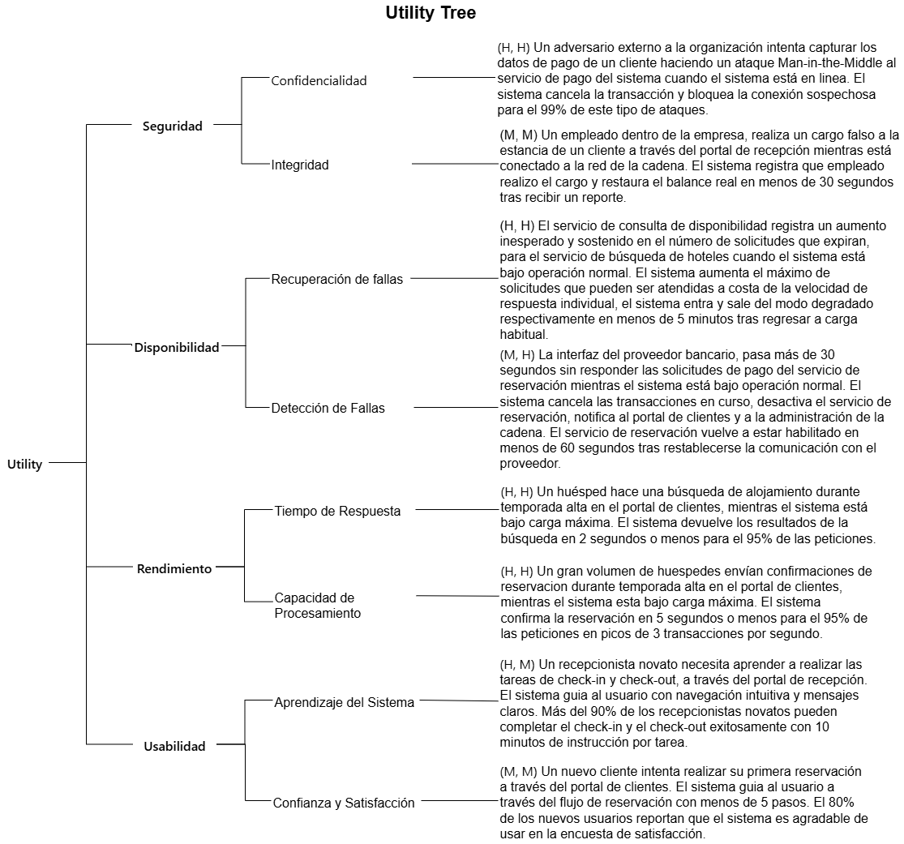
6. Escenarios de atributos de calidad
6.1. Seguridad
6.1.1. Confidencialidad
6.1.2. Fuente
Un adversario externo a la organización.
6.1.3. Estímulo
Intenta capturar los datos de pago de un cliente con un ataque Man-in-the-Middle
6.1.4. Artefacto
Sistema de pagos
6.1.5. Entorno
El sistema esta en linea
6.1.6. Respuesta
-
El sistema cancela la transacción.
-
El sistema bloquea la conexión sospechosa
6.1.7. Medida
El sistema detecta y detiene estos ataques en el 99% de los casos.
6.1.8. Integridad
6.1.9. Fuente
Un empleado dentro de la empresa.
6.1.10. Estímulo
Realiza un cargo falso a la estancia de un cliente.
6.1.11. Artefacto
Portal de recepción.
6.1.12. Entorno
Conectado de la red de la cadena.
6.1.13. Respuesta
-
El sistema registra que empleado realizo el cargo.
-
El sistema restaura el balance real.
6.1.14. Medida
30 segundos después de recibir un reporte.
6.2. Disponibilidad
6.2.1. Recuperación de fallas
6.2.2. Fuente
El servicio de consulta de disponibilidad.
6.2.3. Estímulo
Registra un aumento inesperado y sostenido en el número de solicitudes que expiran.
6.2.4. Artefacto
El servicio de consulta de disponibilidad.
6.2.5. Entorno
Operación normal.
6.2.6. Respuesta
El sistema aumenta el máximo de solicitudes que pueden ser atendidas a costa de la velocidad de respuesta individual.
6.2.7. Medida
El sistema entra y sale del modo degradado respectivamente en menos de 5 minutos tras regresar a carga habitual.
6.2.8. Detección de fallas
6.2.9. Fuente
El interfaz del proveedor bancario.
6.2.10. Estímulo
Pasa más de 30 segunoods sin responder las solicitudes de pago.
6.2.11. Artefacto
El servicio de reservación.
6.2.12. Entorno
Operación normal.
6.2.13. Respuesta
El sistema cancela las transacciones en curso, desactiva el servicio de reservación, notifica al portal de clientes y a la administración de la cadena..
6.2.14. Medida
El servicio de reservación vuelve a estar habilitado en menos de 60 segundos tras restablecerse la comunicación con el proveedor.
6.3. Rendimiento
6.3.1. Tiempo de Respuesta
6.3.2. Fuente
Un huésped
6.3.3. Estímulo
Hace una búsqueda de alojamiento durante temporada alta.
6.3.4. Artefacto
En el portal de clientes.
6.3.5. Entorno
El sistema está bajo carga máxima.
6.3.6. Respuesta
El sistema devuelve con los resultados de la búsqueda.
6.3.7. Medida
En 2 segundos o menos para el 95% de las peticiones.
6.4. Rendimiento
6.4.1. Capacidad de procesamiento
6.4.2. Fuente
Multiples huespedes
6.4.3. Estímulo
Confirmación su reservación durante temporada altaa.
6.4.4. Artefacto
En el portal de clientes.
6.4.5. Entorno
El sistema está bajo carga máxima.
6.4.6. Respuesta
El sistema confirma la reservación.
6.4.7. Medida
En 2.5 segundos o menos para el 95% de las peticiones durante picos de 3 transacciones por segundo.
6.5. Usabilidad
6.5.1. Capacidad de aprendizaje
6.5.2. Fuente
Recpecionista
6.5.3. Estímulo
Necesita aprender las tareas de check-in y check-out.
6.5.4. Artefacto
En el portal de clientes.
6.5.5. Entorno
En tiempo de ejecución.
6.5.6. Respuesta
El sistema guia al usuario con navegación intuitiva y mensajes informativos.
6.5.7. Medida
Más del 90% de los recepcionistas novatos pueden completar el check-in y el check-out exitosamente con 10 minutos de instrucción por tarea.
6.5.8. Confianza y satisfacción
6.5.9. Fuente
Huésped
6.5.10. Estímulo
Intenta realizar su primera reservación
6.5.11. Artefacto
En el portal de clientes.
6.5.12. Entorno
En tiempo de ejecución.
6.5.13. Respuesta
El sistema guia al usuario con navegación intuitiva a través del flujo de reservación con menos de 5 pasos.
6.5.14. Medida
El 80% de los nuevos usuarios reportan que el sistema es agradable de usar en la encuesta de satisfacción.
7. Vista de Contexto
La vista de contexto muestra el sistema como una caja negra. Este diagrama nos servirá más adelante para hacer un DFD.
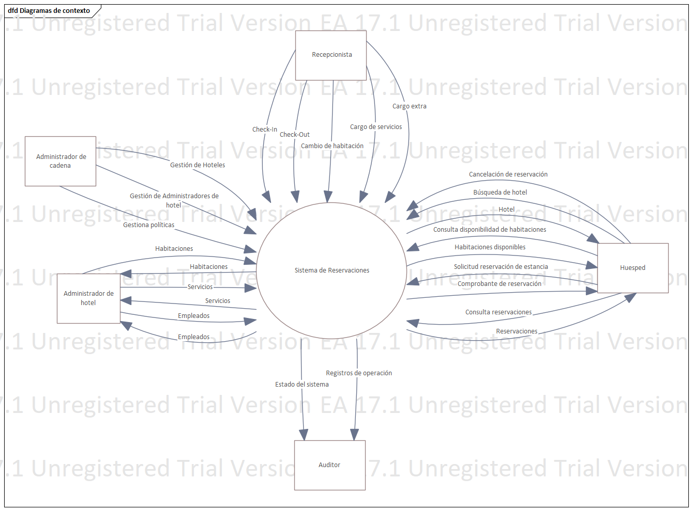
8. Diagramas de Flujo de Datos
8.1. DFD del Administrador
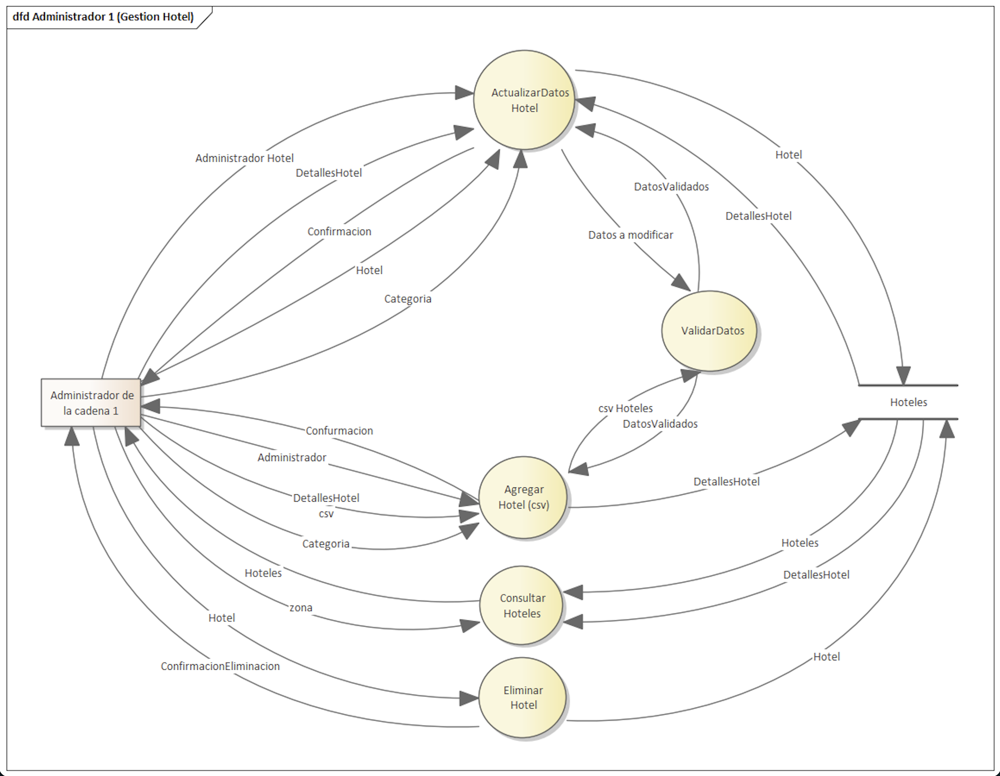
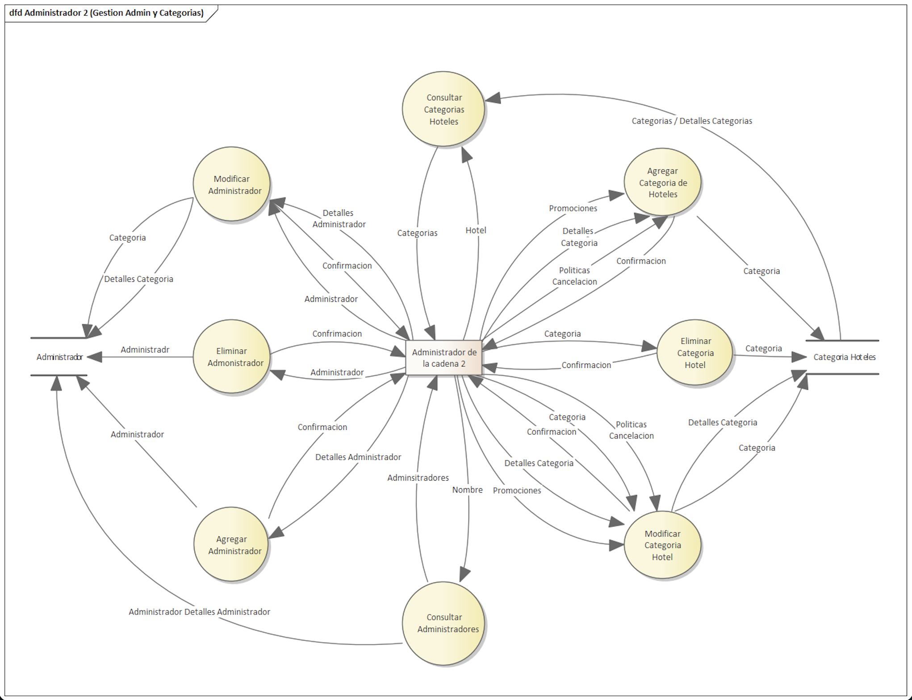
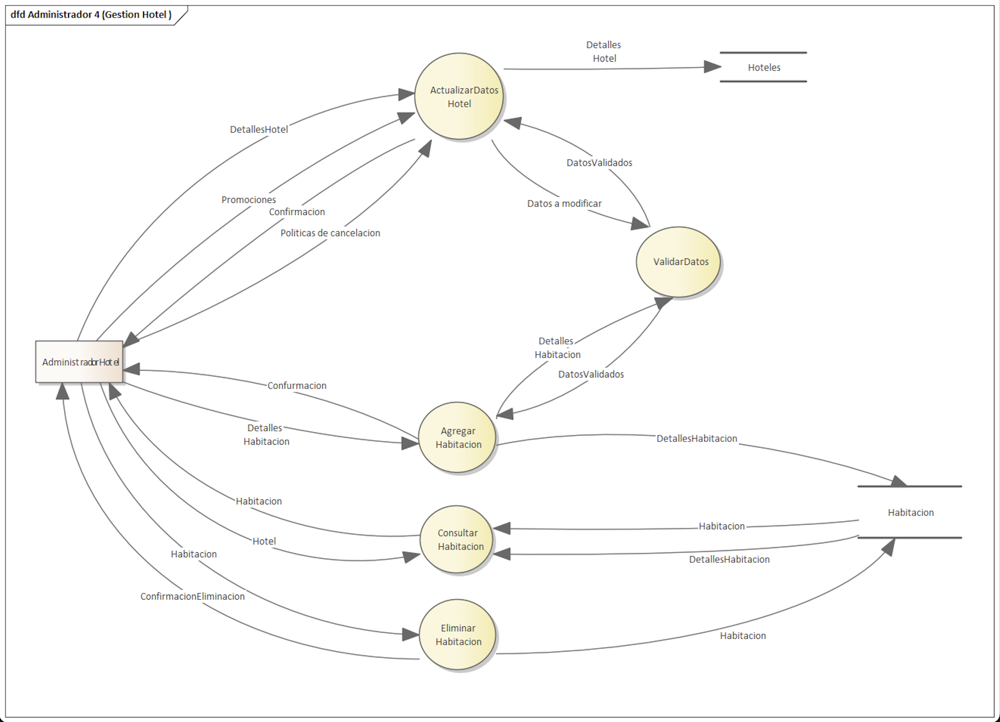
8.2. DFD del Administrador de Hotel
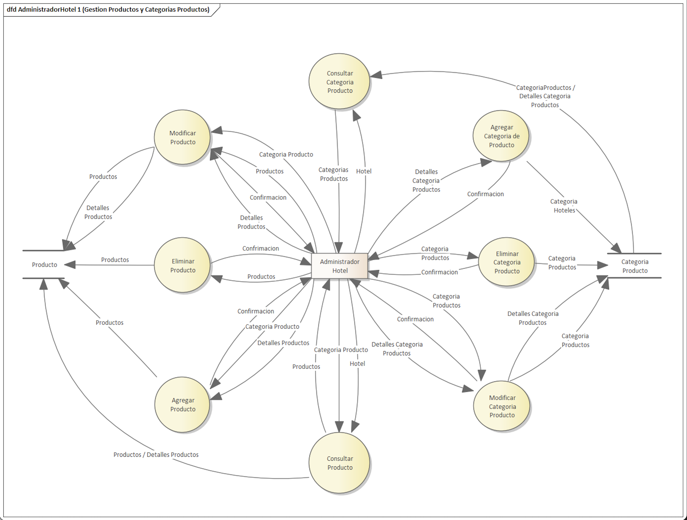
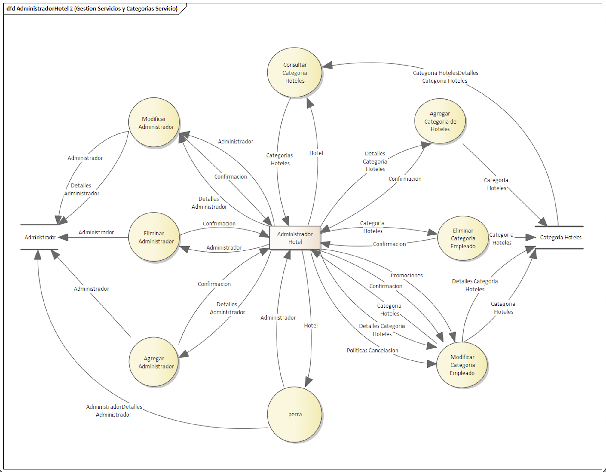
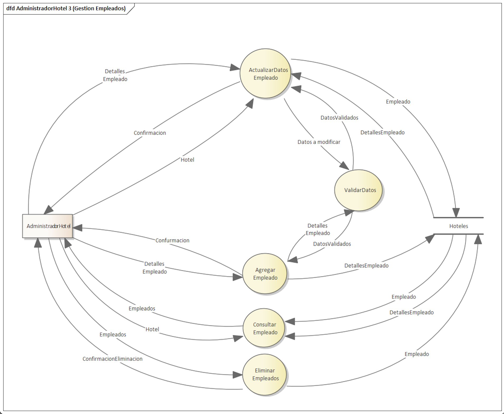
8.3. DFD del Huésped
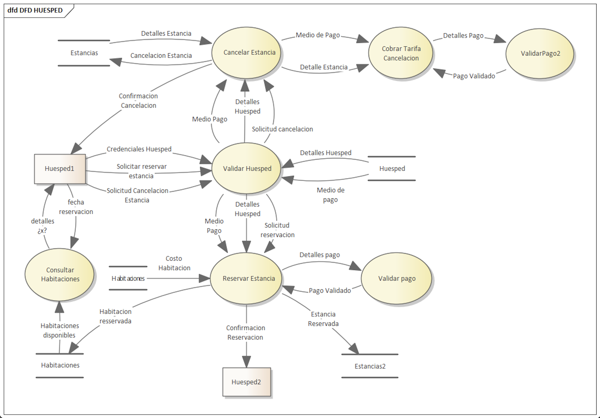
8.4. DFD del Recepcionista
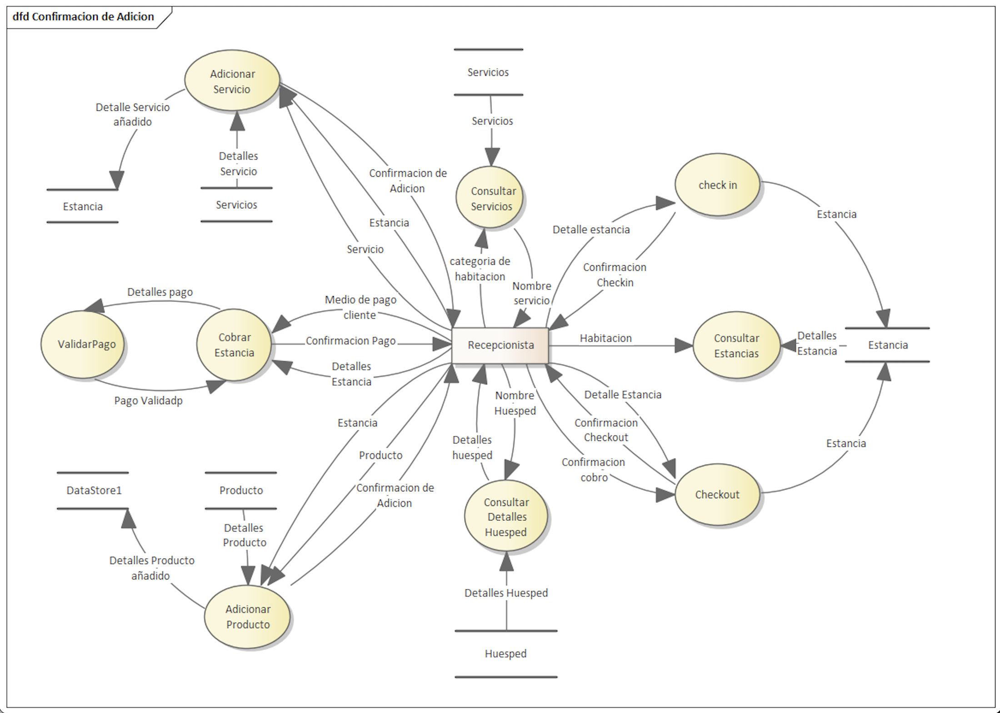
8.5. DFD del Auditor
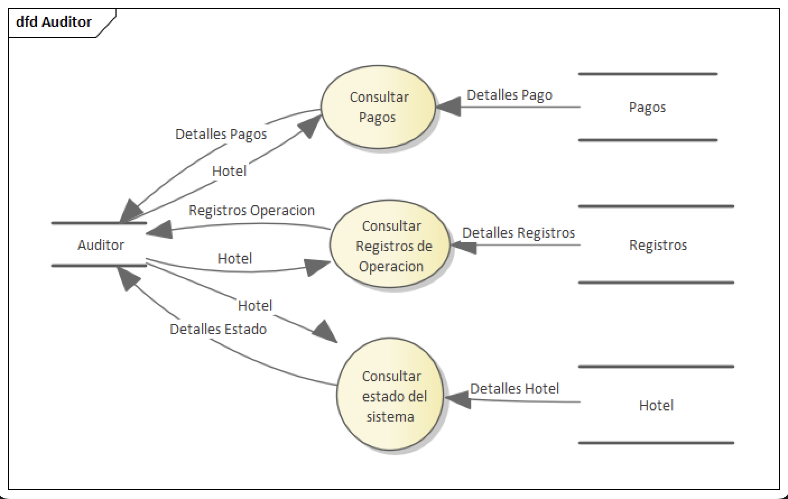